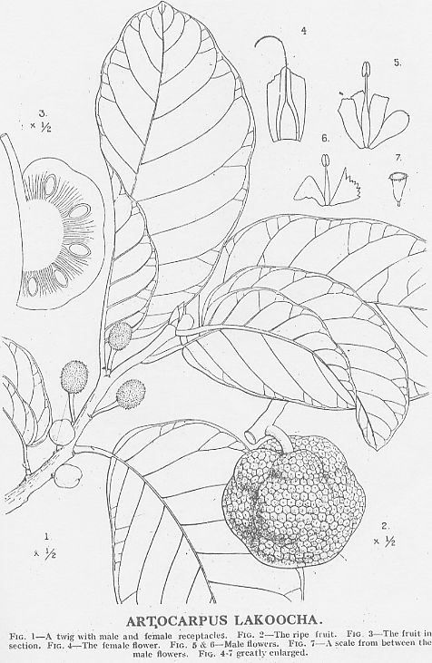

Atrocarpus
lakoocha
Roxb.
Taxonomic Details

----- Correct Name
----- Classification
----- Synonyms
----- Common Names
Other Biological Details
----- Habit and Habitat
----- Diagnostic Features
----- Reproductive Biology
---------- Breeding System
---------- Phenology
---------- Pollinators
---------- Seed Biology
----------Seed Germination
------ Cultivation
----- Major Pests and Diseases
Economic Potential and Uses
----- Parts Used
----- Uses
----- Harvesting Practices
----- Produce and Products
----- Chemistry
----- Processing Techniques
----- Other uses
----- Economic Potential to the
Country
----- Export Potential
Miscellaneous Information
Literature
Taxonomic
Details
Correct Name
: Atrocarpus lakoocha Roxb.
Family : Moraceae
Synonyms :
Common Names :
English: Monkey jack
Hindi: Barhal, Barhal Dheu, Dahu, Lakuch, Dahua,
Bengali: Dephal, Dahua
Malayalam: Wotomba, Theetiplavu, Chima, Thitti pilavu, Lakooch,
Marathi: Lakucha, Lowi, Otamb, Wotomba
Tamil: Irapala, Irappala
Telugu: Kamma-regu, Nakkarenu
Kannada: Vatehuli, The Monkey Jack fruit, Wonata
Burma: Myankdok
Back to Top
Other
Biological Details
HABIT & HABITAT
A deciduous
tree with a clear straight stem, generally 20-30'high and up to 8'in girth.
It occurs in the sub-Himalayan tract (up to 4,000') from Kuma-on eastwards
to Assam, and southwards to Burmaand the Andamans.
It is a cultivated species found in cultivated fields and
Plains, evergreen forest, Forests, Gardens and also in hill forests,
It is met with in Bihar, Orissa and the Central Provinces.
In the West Coast it is
found
from
Konkan
southwards
to Malabar and Travancore.
BioticZone: Himalaya, Konkan, Tropical Himalayas, West Coast, Western Ghats and
Western peninsular India,
Availability :
Misc: Assam herbarium, Meghalaya, Baghmara (Garo hills), Birma, Damra (Garo
hills),ganjam,
Garo hills, Kanjilal, Khasia, Kumaon and Vizagpatnam hills.
Country: Burma, Ceylon, India, Malayan Paninsula and Sri Lanka.
Zone: Central, East, Islands, North, North East, South and West.
State: Andaman & Nicobar, Andhra Pradesh, Assam, Karnataka, Kerala, Madhya
Pradesh, Meghalaya, Orissa, Rajasthan and Tamil Nadu.
District: Andaman, Bhopal, Dharwad, Indore, Kodagu, Mysore, Raigarh and Uttar
Kannada.
Taluk: Dharawad, Supa and Yellapur.
Status :
Back to Top
DIAGNOSTIC FEATURES
A
deciduous tree with a clear straight stem, generally 20-30'high and up to 8'in
girth.
The wood is yellowish-Brown when fresh, but turns dark-brown after exposure.
According to Trotter it is heavier than other Atrocarpus woods (40 lb. per c.
ft.). It is fairly strong , similar to teak in transverse strength and modulus
of elasticity. It is straight or interlocked grained, veryn coarse and even
textured. Anatomically, it is similar to chaplash but has more numerous vessels,
metatracheal diffused parenchyma, smaller fibres and narrower rays.
Back to Top
REPRODUCTIVE BIOLOGY
Breeding System
:
Phenology :
The flowering occurs during January-April and also during March-July.
Pollinators:
Seed Biology :
Seed Germination:
Cultivation:
Back to Top
MAJOR PESTS & DISEASES
Pests:
Diseases:
Back to Top
Economic
Potential and Uses
Parts used:
Fruits,
Root, Leaves and Wood.
Uses:
-
The tree is also cultivated for its edible fruits. These are roundish (2-4"
diam.), ill-shaped, and of a dirty yellow colour and sweetish sour taste. A
full grown tree yields 7-11 cwt. of fruits per annum.
- In Assam, it is
chewed as a substitute for
betel-nuts.
- The timber is suitable for making boiling water proof and
resistant plywood with Phenolio resin adhesive resistant plywood with
phenolix resin adhesive.The Timber is also found suitable for making fire
resistant plywood merine plywood grade 1 and 2 black board and for concrete
shullering work. Leaves as fodder.
Harvesting Practices
Produce and Products
Back to Top
Chemistry :
The latex contains : water and water
solubles, 68-8, and caoutchouc, 3-7%; and the coagulum : caoutchouc, 12-2 ; resins,
32.8; and insolubles 5% (Griffiths and Budhiraja, loc. cit.). The bark contains
8.5% of tannin (Hooper, ex Burkill, loc. cit., 275). In Assam, it is chewed as
a substitute for betel-nuts. The roots of this species are richer in colouring
matter than those of the other Artocarpus spp.
Back to Top
Processing Techniques : Sliced fruit
smeared with salt and dried, used as souring agent. Fruit is boiled with water
and made cakes from dried syrup & used as souring agent
Back to Top
Other Uses
-
Lakuch is durable both in exposed situations and under water, and is not liable
to attack by fungi or white ants. It saws and works well, finishing to a fine smooth surface,
but does not take a satisfactory polish.
The wood seasons easily, but logs should be converted soon after felling.
The timber is much used for constructional work (posts, beams, rafters
and scantlings), medium weight furniture and for boat building.
It is available only in limited quantities as the trees are not common
in forests (Pearson and Brown, loc. cit.).
- The
wood is yellowish-brown when fresh, but turns dark-brown after exposure.
The timber is very much used for constructional work( posts, beams,
rafters and scantlings), medium weight furniture and for boat building.
The bark contains 8.5% of tannin .
- The roots of
this species are richer in colouring matter than those of the other Artocarpus
spp.
Back to Top
Economical
Potential to the country
Back to Top
Export Potential
Back to Top
Miscellaneous
Information
Back to Top
Literature
- Flora of Bombay Presidency,Vol 3,Theodore Cooke, C.I.E.,1907,Atree,Bangalore.
- The wealth of India, A
Dictionary of Indian Raw Materials and Industrial Products, Vol. I. A-By,
Publications and Information Directorate, CSIR, New Delhi, India, 1948.
- The Wealth of India ,2000 A dictionary of Indian
Raw Materials and Industrial Products. Raw Materials,First Supplement series Vol:1
A-CI. CSIR. New
Delhi. India..P.98.
Back to Top